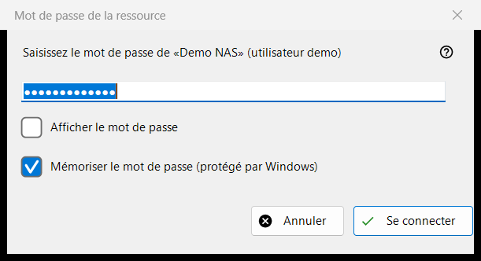
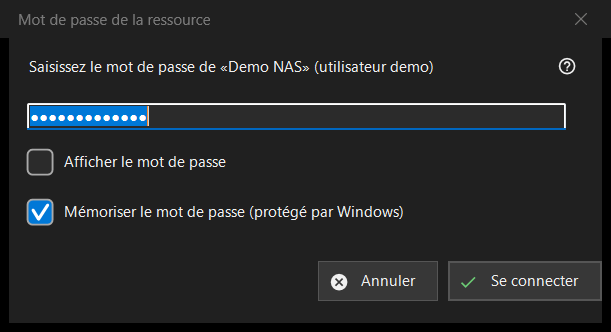

Mot de passe de la ressource
Objectif
Demande le mot de passe d'un serveur ou d'un dossier réseau enregistré. La fenêtre s'ouvre lorsque vous ouvrez une ressource dont le mot de passe n'est pas enregistré, lorsque celui qui l'est est refusé, lorsqu'un dossier de destination sur un serveur ou un import a besoin du mot de passe, et sous le titre «Code PIN de la ressource» pour un dossier protégé par un code PIN.


Dans cet ordre
- Saisissez le mot de passe ; il est masqué et «Afficher le mot de passe» le révèle.
- Décidez si «Mémoriser le mot de passe (protégé par Windows)» reste coché.
- Appuyez sur «Se connecter» (Entrée) ou sur «Annuler» (Esc) pour arrêter.
Les éléments
Le mot de passe
L'invite nomme la ressource et l'utilisateur. Le mot de passe est utilisé exactement tel que saisi, espaces compris. Une zone vide donne «Saisissez le mot de passe». «Afficher le mot de passe» est désactivé au départ.
Mémoriser le mot de passe
La case est cochée par défaut. Cochée, le mot de passe est enregistré chiffré par Windows pour votre compte, et seulement après qu'une connexion l'a confirmé ; décochée, il reste en mémoire pour l'exécution en cours seulement. La case est masquée là où le mot de passe est de toute façon enregistré, par exemple lors de l'import d'un fichier de paramètres, et en mode PIN.
Un mot de passe refusé
Si le serveur a refusé le mot de passe précédent, une ligne indique «Le mot de passe n'a pas été accepté. Saisissez-le à nouveau.» et la fenêtre le redemande.
Mode PIN
Pour un dossier protégé par un code PIN, le titre est «Code PIN de la ressource» et l'invite demande le code PIN de la ressource nommée. Il n'y a pas de case de mémorisation, et un code PIN refusé donne «Le code PIN a été refusé. Saisissez-le à nouveau.»